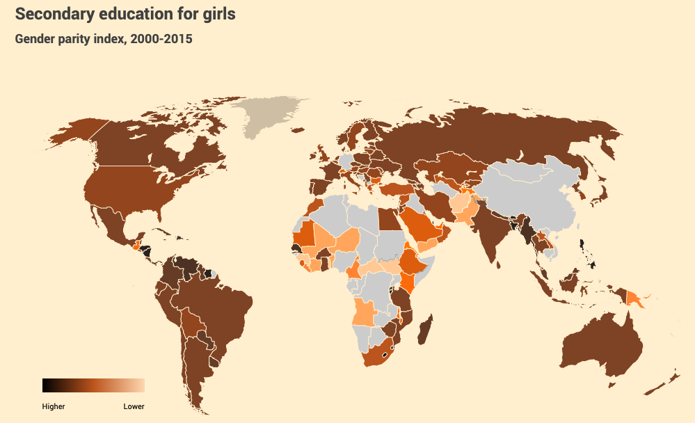
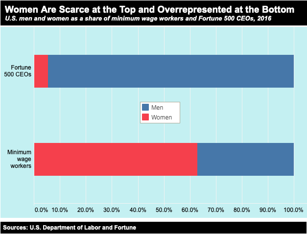
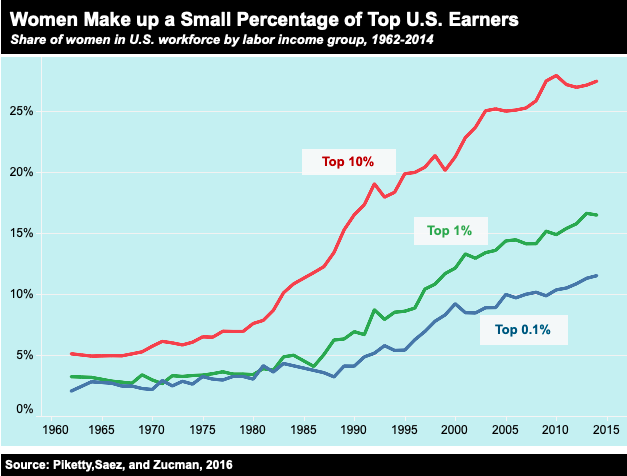
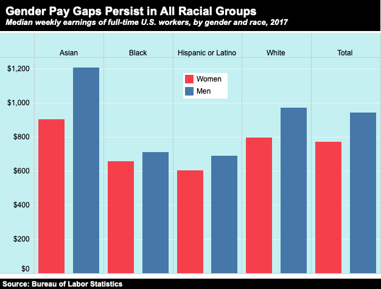
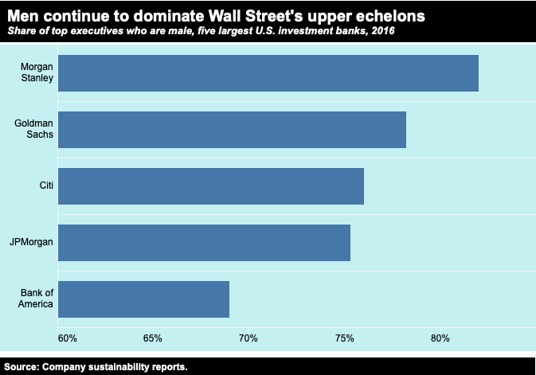
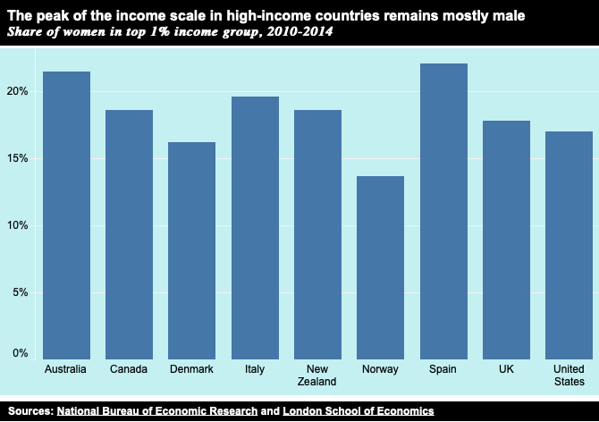
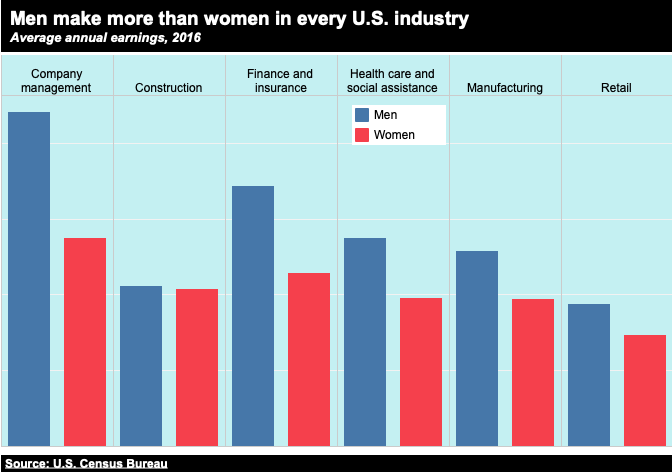
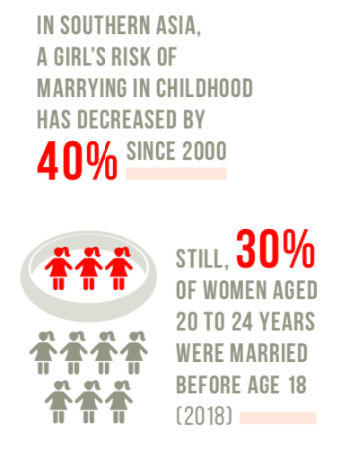
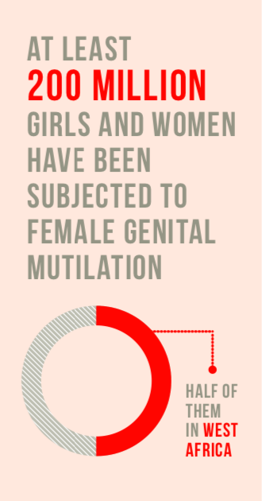

Gender Inequality: Women are Suffering All Over the World


Female-dominated occupations — such as childcare and restaurant service — continue to occupy the lower rungs of the U.S. wage ladder. Women make up 63 percent of workers earning the federal minimum wage, a wage rate stuck at $7.25 since 2009. By contrast, women represent only 5 percent of CEOs at Fortune 500 firms. CEOs took home $13.1 million on average in 2016.

Men make up an overwhelming majority of top earners across the U.S. economy, even though women now represent almost half of the country’s workforce. Women comprise just 27 percent of the top 10 percent, and their share of higher income groups runs even smaller. Among the top 1 percent, women make up slightly less than 17 percent of workers, while at the top 0.1 percent level, they make up only 11 percent.

Within racial groups, the largest pay gaps between men and women appear among whites and Asians — not because Latinas and black women have made faster progress towards equity but because average pay for men in these groups falls far below the compensation of white and Asian men.

White males particularly dominate highly lucrative financial industry jobs. At the top five U.S. investment banks, males make up from 69 to 82 percent executives and top managers. The share who are white ranges from 78 to 87 percent. More than two-thirds of all New York City securities industry employees were male in 2016, and nearly two-thirds were white.

Other major economies show similar trend lines. A study of eight high-income countries found that women made up just 14 percent to 22 percent of the top 1 percent of earners. These surveys were conducted during the 2010-2014 period. The U.S. figure is from 2012.

American women earn less than men, on average, in all industries. The largest pay gaps are in management positions, where men made $88,000 on average in 2016, compared to just $55,000 for women. The smallest gap appears in the construction sector, but women make up only 9 percent of workers in this industry.


Data and Statistics
The rates of girls between 15-19 who are subjected to FGM (female genital mutilation) in the 30 countries where the practice is concentrated have dropped from 1 in 2 girls in 2000 to 1 in 3 girls by 2017.
Globally, 750 million women and girls were married before the age of 18 and at least 200 million women and girls in 30 countries have undergone FGM.
In 18 countries, husbands can legally prevent their wives from working; in 39 countries, daughters and sons do not have equal inheritance rights; and 49 countries lack laws protecting women from domestic violence.
Only 52 per cent of women married or in a union freely make their own decisions about sexual relations, contraceptive use and health care.
Globally, women are just 13 per cent of agricultural land holders.
Women in Northern Africa hold less than one in five paid jobs in the non-agricultural sector. The proportion of women in paid employment outside the agriculture sector has increased from 35 per cent in 1990 to 41 per cent in 2015.